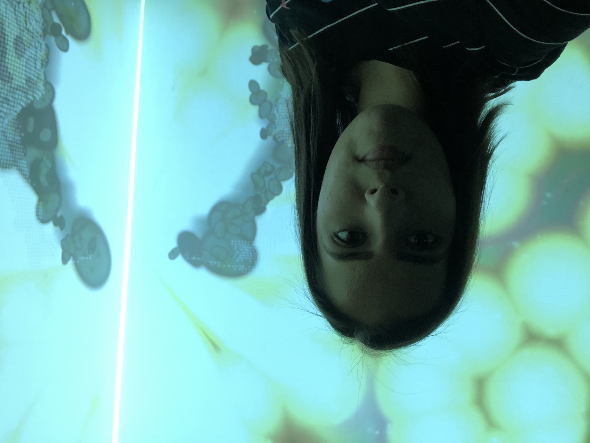
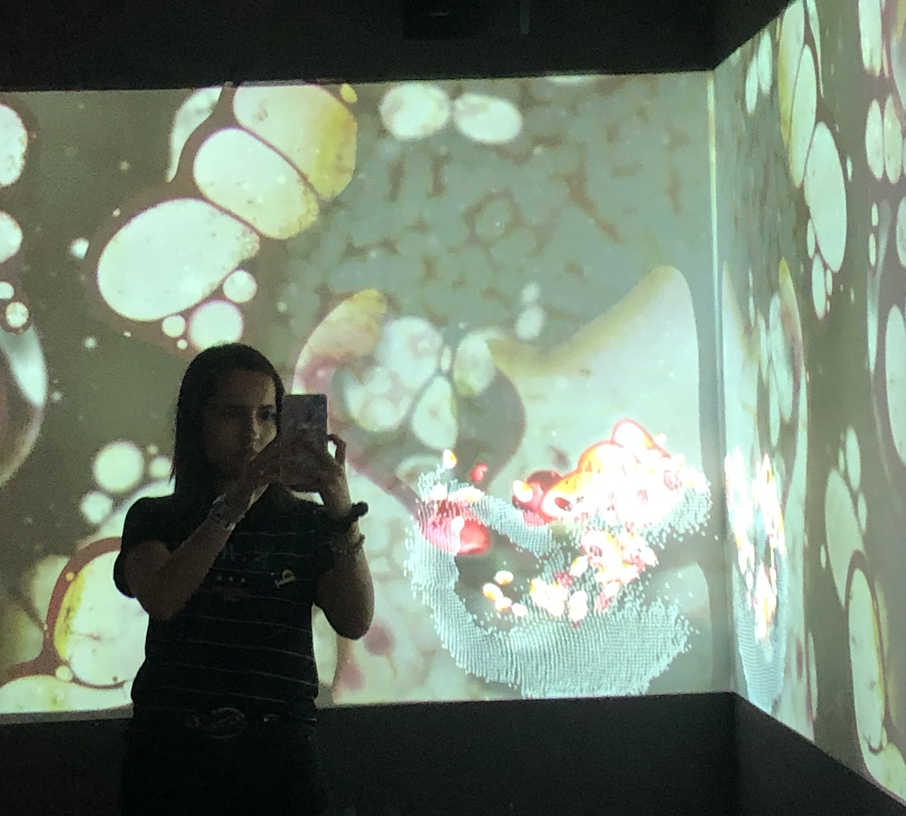
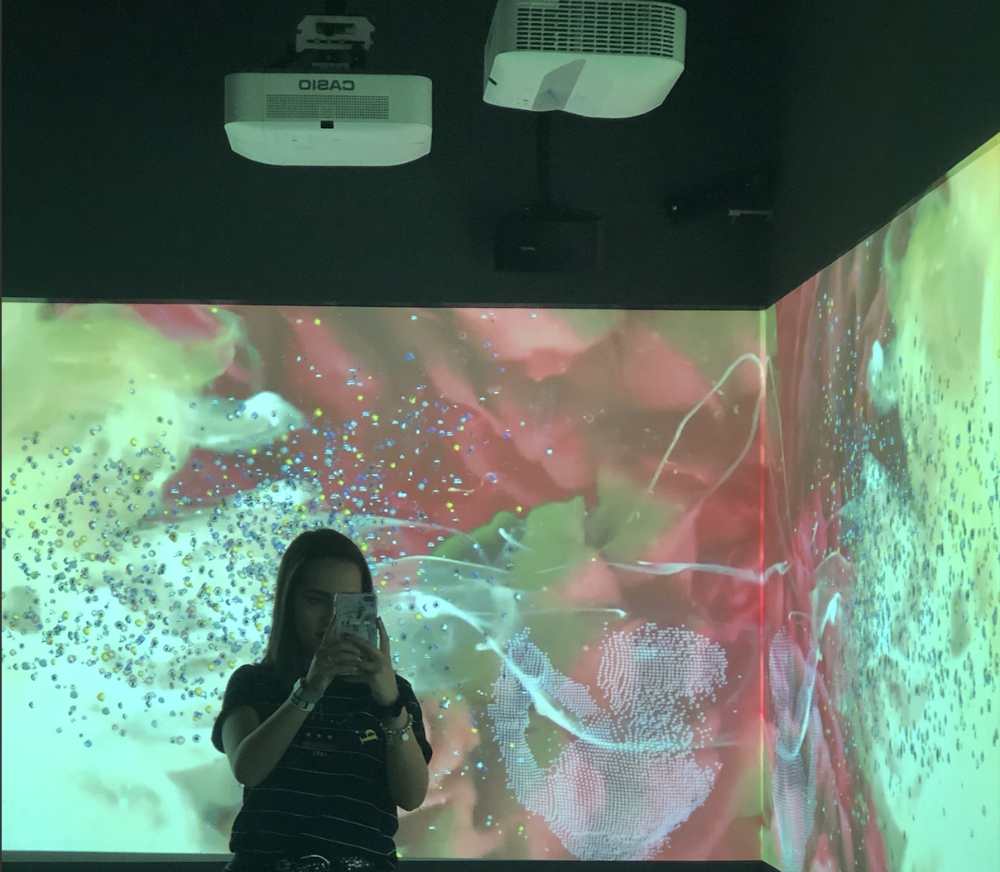
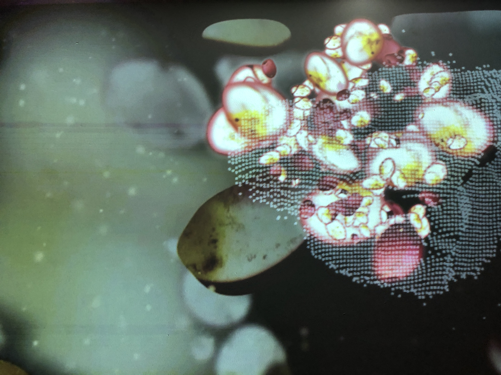
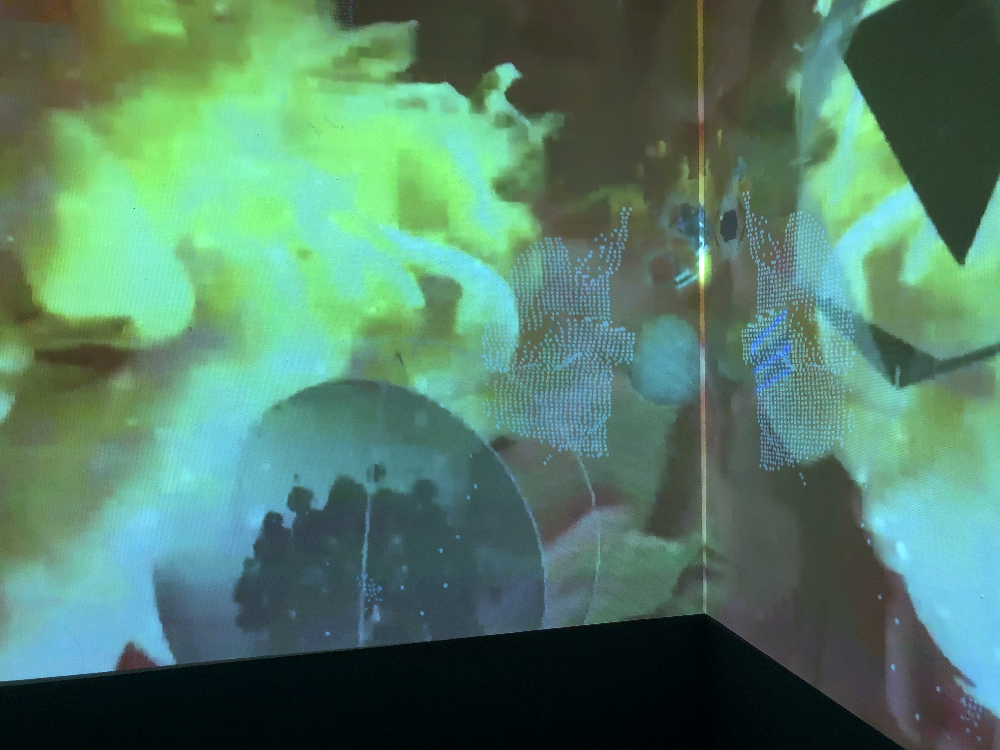
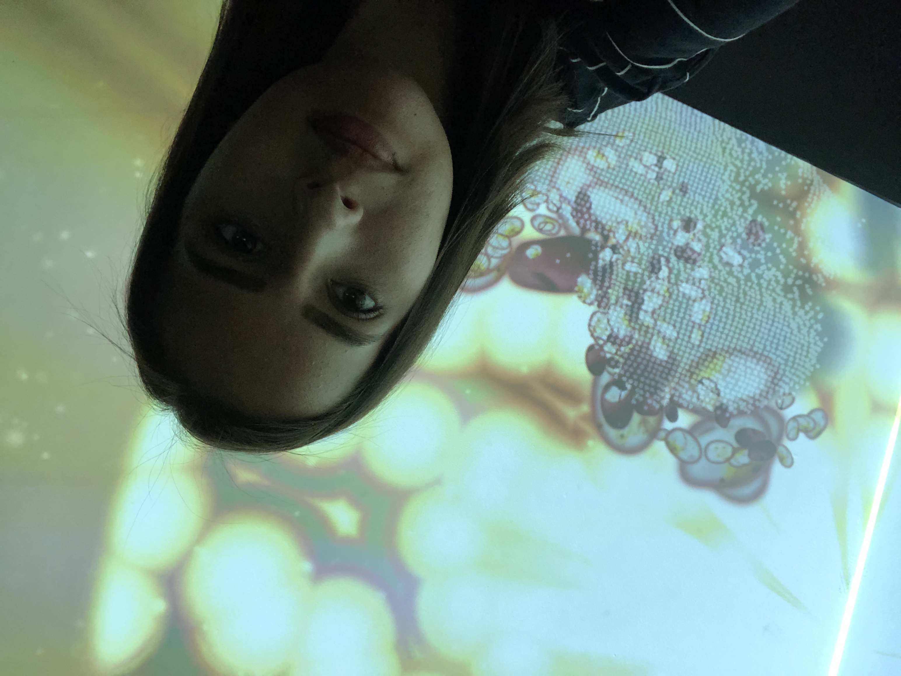

Opdracht
Op maandag 27 mei 2019 ben ik naar NEMO in Amsterdam geweest. NEMO is een wetenschappelijk museum voor kinderen. In NEMO zijn er dus allerlei verschillende, wetenschappelijke dingen te doen, van het maken van grote bellen met bellenblaas tot aan een projectie waarmee kinderen de wereld kunnen hebben.
Tijdens mijn bezoek aan NEMO merkte ik heel duidelijk dat de doelgroep kinderen was, omdat het wemelde van kinderen en ouders, waardoor het voor mij lastig was om goed te zien was er allemaal te doen was en om deze dingen uit te proberen. Toch is het gelukt om een aantal dingen uit te proberen en te kunnen beoordelen.
Uiteindelijk heb ik gekozen voor de installatie ‘Bouwstenen in de ruimte’, waarbij ik in een soort kamer ging staan met projector. Deze projector kon een projectie van mij maken, maar dan in de vorm van de atomen waar ik van gemaakt ben. Het was dus geen schaduw projectie, maar echt waar een mens van gemaakt is. De installatie is gemaakt met een projector en Augmented Reality; er werd een vorm van informatie toegevoegd aan de echte wereld. Ik vond deze installatie heel erg gaaf, omdat ik over dit onderwerp nooit iets hoor of zie en vooral niet in zo een interactieve vorm. Vooral voor kinderen is het heel interessant om te leren waar mensen van gemaakt zijn, naast de algemene biologie lessen die zij krijgen.
     